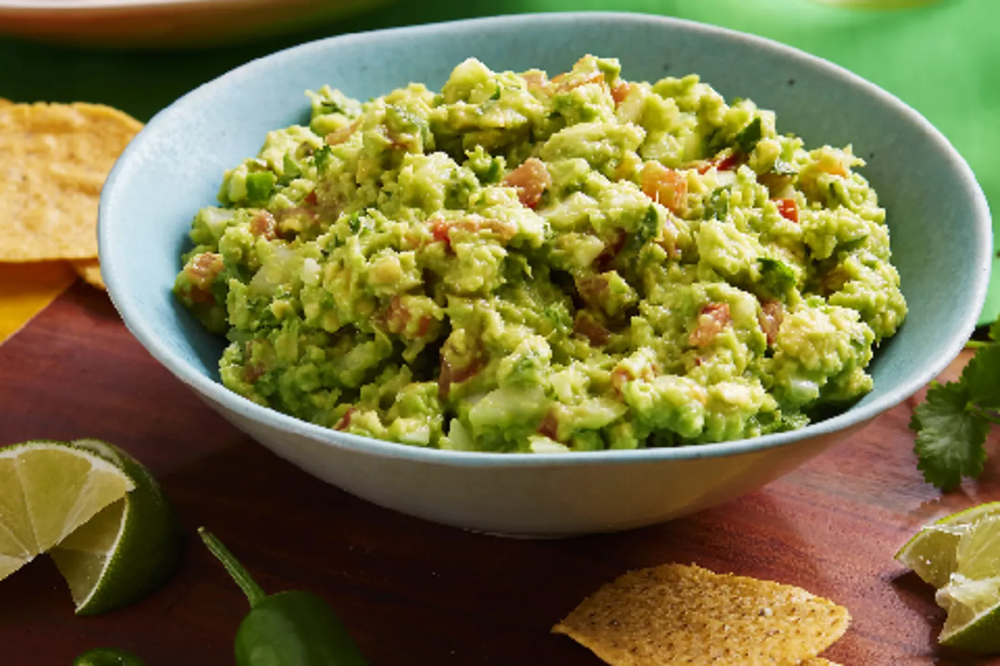
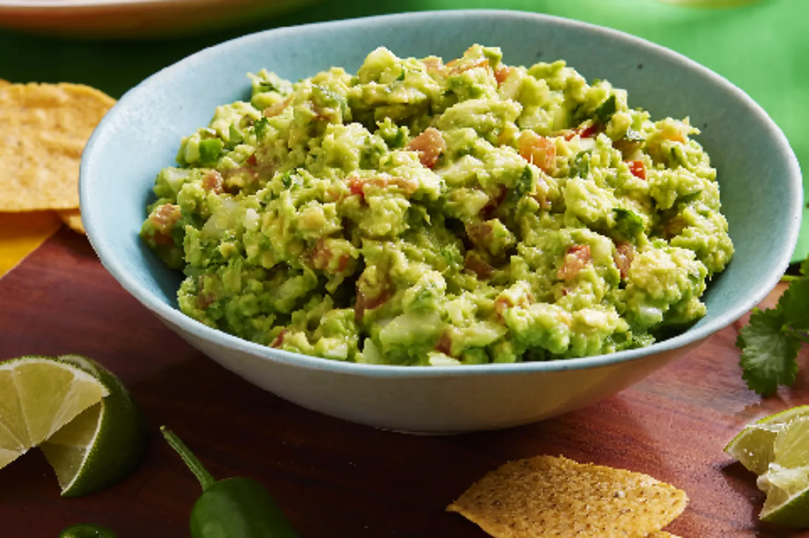
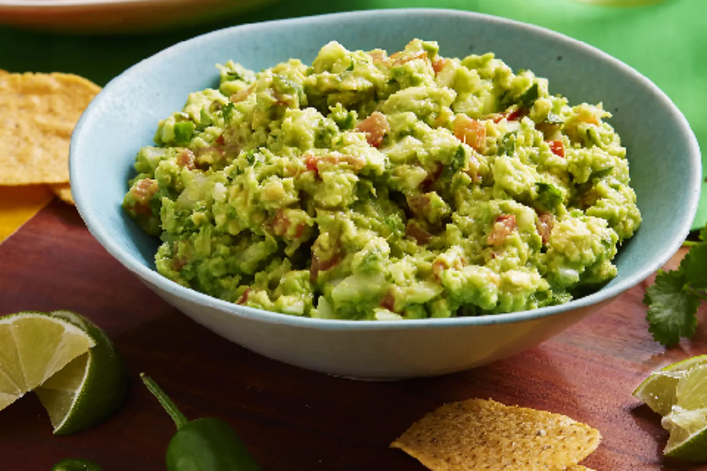

Bienvenue sur Planète Chef, votre destination culinaire pour découvrir les saveurs du monde entier. Que vous soyez un gourmet curieux ou un chef passionné, notre site vous propose une vaste collection de recettes authentiques et inspirantes provenant des quatre coins du globe. Plongez dans une aventure gastronomique où chaque plat raconte une histoire, et laissez-vous guider par notre communauté de cuisiniers experts et amateurs. Planète Chef, c'est l'invitation à un voyage gustatif sans frontières, directement depuis votre cuisine 🗺.
À propos
Planète Chef est né de notre amour pour la cuisine du monde entier. Fondé en mai 2024 par des passionnés de gastronomie, notre site rassemble des recettes authentiques et des astuces culinaires découvertes au fil de nos voyages. Nous sommes dédiés à partager avec vous la richesse des saveurs internationales et à transformer chaque repas en une aventure culinaire. Rejoignez-nous et explorez le monde, une recette à la fois.
Services
- Recettes Authentiques : Découvrez des recettes détaillées et authentiques provenant de diverses cultures, avec des instructions claires et des conseils pratiques.
- Cours de Cuisine en Ligne : Participez à des ateliers interactifs animés par des chefs renommés, apprenez de nouvelles techniques et perfectionnez vos compétences culinaires.
- Conseils et Astuces : Profitez de nos articles informatifs et de nos vidéos explicatives pour apprendre des astuces de cuisine, des techniques de préparation et des secrets de chefs.
- Communauté : Rejoignez notre communauté passionnée de gourmets, échangez des idées, partagez vos propres créations et trouvez l'inspiration grâce aux expériences des autres membres.
- Plans de Repas Personnalisés : Recevez des plans de repas adaptés à vos goûts et besoins alimentaires, incluant des recettes variées et équilibrées pour toute la semaine.
Blog
MEXICO 🇲🇽 : Guacamole Authentique

Ingrédients :
3 avocats mûrs
1 tomate
1 oignon rouge
1 piment jalapeño
2 gousses d'ail
1 bouquet de coriandre fraîche
1 citron vert
Sel
Instructions :
Préparation des ingrédients :
Hacher finement la tomate, l'oignon, le piment jalapeño et la coriandre.
Écraser les gousses d'ail.
Presser le jus du citron vert.
Préparation du guacamole :
Couper les avocats en deux, retirer les noyaux et évider la chair dans un bol.
Écraser la chair des avocats à l'aide d'une fourchette jusqu'à obtenir une consistance crémeuse avec quelques morceaux.
Mélange :
Ajouter la tomate, l'oignon, le piment jalapeño, l'ail écrasé et la coriandre au bol d'avocats.
Verser le jus de citron vert et mélanger délicatement.
Saler selon votre goût.
Service :
Servir immédiatement avec des chips de tortilla, des légumes frais ou comme accompagnement de vos plats mexicains préférés.
 
